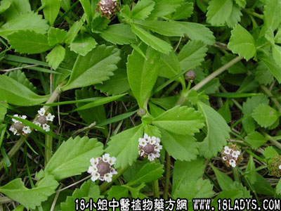

别名：苦舌草（海南）。
植物名：过江藤。
生长环境：本品为一年生，匍匐草本。生长于公路边，水沟火池塘旁。
分布：广州附近及海南，广布于热带各地。
入药部分：全草。
采集期：春、夏。
自采地点：荒地、塘边。
性味：性微凉、味淡。
功能：去湿毒。
主治、用量和用法：烂头、皮肤痕痒、皮肤湿毒流水：干用2两火生用4两，煎水洗患处。（孩儿草亦名甴曱草，产于山上，常作内服用。本品产塘边为多，只作外用，宜区别之。）
（方歌）味淡性凉水甴曱，皮肤湿毒烂头好，二两用干生用四，煎汤频洗收敛早。
本文解释权归中药大全，本文地址：https://www.daquan.com/post/1565.html